地政学
ディリはインドネシア、オーストラリア、太平洋島嶼世界の間にある若い国家の首都です。独立後の外交、安全保障、海洋資源、ASEAN加盟への道、ポルトガル語圏との関係が、港と官庁街に集まります。海峡が政治を動かします。
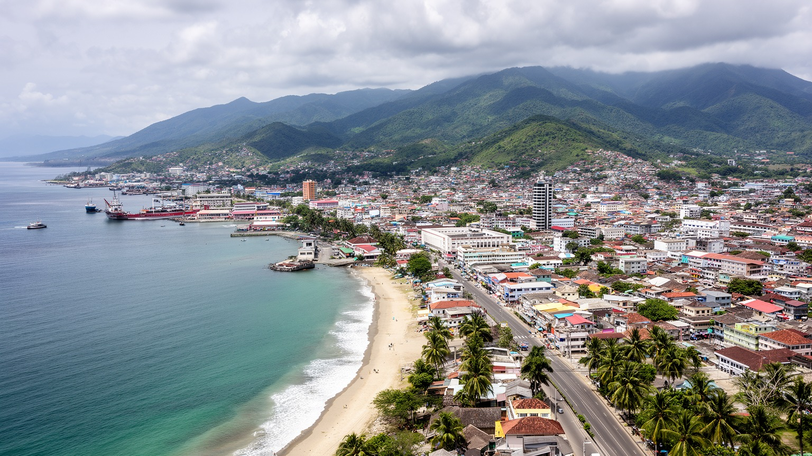
🇹🇱 東ティモール / 首都ディリ / World City Atlas
ティモール島北岸の海辺に広がる、東ティモールの首都です。港、政府機関、大学、教会、国際援助、抵抗の記憶、若い人口、海と山へ向かう日常が、細長い市街地に集まります。
海辺の首都
ディリは港湾都市であり、独立国家の行政都市であり、抵抗と国際支援の記憶を抱える生活都市です。山が海へ迫る地形の中で、道路、住宅、学校、教会、市場が国の将来を受け止めます。
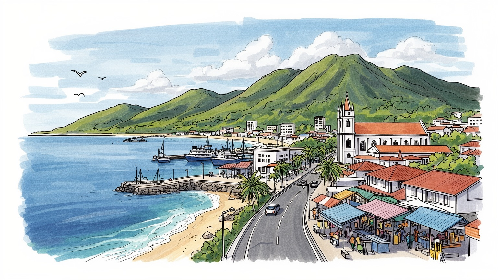
ディリはインドネシア、オーストラリア、太平洋島嶼世界の間にある若い国家の首都です。独立後の外交、安全保障、海洋資源、ASEAN加盟への道、ポルトガル語圏との関係が、港と官庁街に集まります。海峡が政治を動かします。
港湾、行政、教育、国際援助、小売、建設、飲食、通信が雇用の中心です。石油基金に支えられた国家財政と民間の仕事づくりの差が大きく、若者、女性、帰還移民の働き方が首都の課題です。仕事の幅が問われます。
カトリック信仰、テトゥン語、ポルトガル語、インドネシア語、各地の民族文化が交わります。教会、家族儀礼、独立記念日、抵抗の物語、海辺の屋台、サッカーが、都市の時間を形作ります。祈りは公的記憶と結びます。
住民は暑さ、雨季の冠水、住宅、水、通勤、物価、教育を気にしながら暮らします。旅人はクリスト・レイ像、抵抗博物館、聖堂、市場、海岸、アタウロ島、山の村へ足を伸ばします。日常と旅がとても近い首都です。
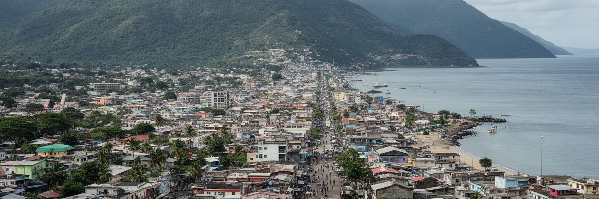
ディリの都市性は、ティモール島北岸の細い平地に首都機能が押し込まれていることから始まります。北にはオンバイ海峡が開け、南側には山が迫り、市街地は海岸道路、港、官庁、学校、教会、住宅地を横へ伸ばしながら広がります。広いデルタや大きな内陸平野を持つ都市ではないため、道路一本の混雑、排水路の詰まり、斜面地の開発、海岸の埋め立てが生活へすぐ響きます。雨季には短時間の強い雨が流れ込み、低地の冠水や土砂の流出が起こりやすく、乾季には暑さとほこりが街の感覚を変えます。海は眺めと港を与えますが、同時に津波、高潮、海岸侵食への備えも求めます。山は美しい背景である一方、急斜面の住宅や道路管理の難しさを生みます。ディリを歩くと、独立国家の首都でありながら、地形の余白が少ないことが分かります。公共交通、歩道、排水、緑陰、学校、診療所をどこへ置くかは、都市デザインだけではなく防災と公平性の問題です。海辺の景観を楽しむ都市であるためには、海岸と斜面を共有財産として扱い、短い平地を車だけで消費しない工夫が必要です。都市の成長が山側へ押し出されるほど、避難路、崖崩れ、給水管、学校の距離も同時に考える必要があります。地形を読むことが、首都の弱い場所を早く見つける手がかりになります。都市計画は、海風と水の流れを味方にする発想から始まります。
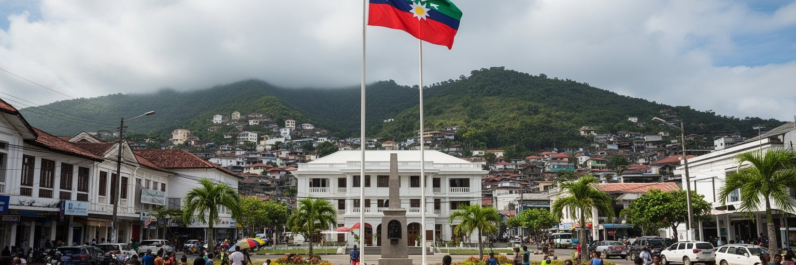
ディリは、二〇〇二年に主権を回復した東ティモールの政治的な中心です。大統領府、政府庁舎、国会、裁判所、外国公館、国際機関、NGO、報道機関が集まり、人口百四十万人規模の国の制度を日々動かします。独立は遠い過去の出来事ではなく、行政文書、記念日、学校教育、退役者の処遇、土地権利、言語政策、外交方針に今も関わります。インドネシア占領期の暴力、住民投票、国連暫定統治、二〇〇六年危機の記憶は、国家への信頼を測る背景になっています。小さな首都では政治家、官僚、活動家、学生、記者の距離が近く、制度への期待や不満が街の会話に早く表れます。石油収入を蓄えた基金をどう使い、教育、医療、道路、水、雇用へ変えるかは、ディリの政策判断として可視化されます。ASEAN加盟への準備やオーストラリア、インドネシア、ポルトガル語圏との関係も、外交の言葉だけでなく、港、空港、職業訓練、行政能力の課題に結びます。ディリの政治性は、旗や式典の強さだけではありません。住民が手続きを公平に受けられ、地方から来る人が首都を自分の国の窓口として使えるかにあります。公的機関が集中することで、首都の住宅費や交通費は上がりやすくなります。政治の中心であることは、同時に生活負担をどう抑えるかという都市政策でもあります。信頼は窓口の一つから育ちます。
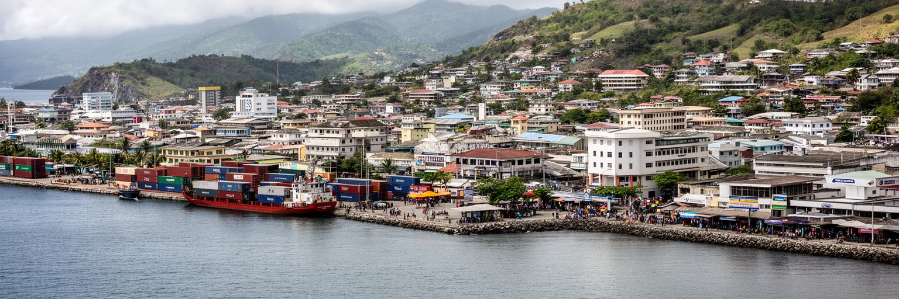
ディリの経済を支える大きな柱は、港、行政、援助、建設、小売、教育、サービス業です。国土の多くが山地で道路網も限られるため、港と海岸道路は食料、燃料、建材、日用品、援助物資を受け入れる生命線になります。石油・ガス収入は国家財政を支えてきましたが、市内の雇用は公務、国際機関、NGO、学校、ホテル、飲食、運転、警備、清掃、露店、建設現場などに広がります。輸入品への依存は、為替、燃料費、物流の混乱を家計へ直接伝えます。国家予算の支出が商業を動かす一方、民間企業が自立的に仕事を増やす力はまだ限られ、若者の雇用や技能形成が課題になります。援助経済は道路、保健、教育、防災、行政能力を支えますが、短期プロジェクトに人材が吸い寄せられ、地元企業や公共部門の持続力を弱めることもあります。ディリの商店街や市場を歩くと、輸入米、携帯電話、建材、バイク、屋台の食事、外国語の看板が同時に見えます。成長の数字だけでなく、どの仕事が通年で安定し、誰に賃金と技能が残るのかを見ることが重要です。港湾都市としてのディリは、海から入る富と物資を、生活の安心へ変えられるかを試されています。港の効率が上がれば物価を抑える助けになりますが、労働者の安全、税関の透明性、地元運送業者の参加も欠かせません。物流の改善は、地方の市場にも波及します。
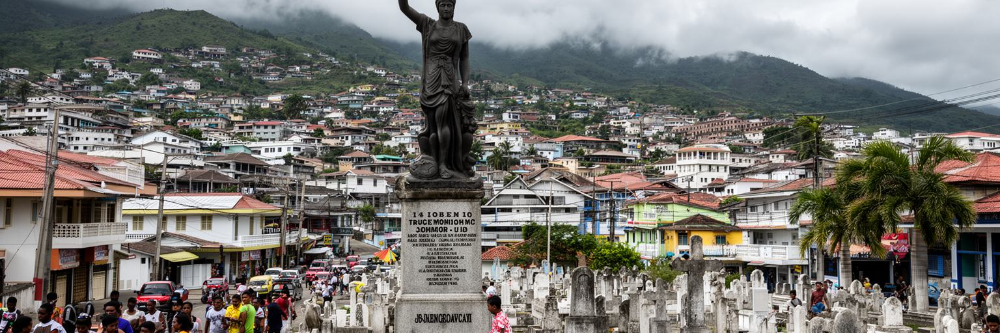
ディリには、東ティモールの独立運動と暴力の記憶が濃く残っています。ポルトガル植民地期、インドネシアによる占領、サンタクルス墓地での虐殺、住民投票後の破壊、国連暫定統治は、都市の近現代史を形作りました。抵抗博物館、記念碑、墓地、教会、学校、家族の語りは、国家の物語と個人の喪失を結びます。観光客がこの都市を訪れる時、海辺の穏やかさだけを見ると、住民が背負ってきた歴史の重さを見落とします。記憶を公共空間で扱うことは、過去を固定する作業ではなく、暴力の被害者を忘れず、若い世代が独立の意味を学び直す作業です。一方で、英雄の物語だけでは、女性、子ども、避難民、地方の村、元戦闘員、移住者の経験が見えにくくなります。ディリの記憶は、国旗の下で一つにまとまる部分と、家庭の中で静かに語られる部分を持ちます。都市が成長し、商業施設や新しい道路が増えるほど、記憶の場所をどう守るかが重要になります。サンタクルス墓地や博物館を訪れることは、悲劇を消費することではなく、国家の自由がどのような犠牲と選択の上にあるかを考える機会です。ディリは、独立の歓びと傷が同じ街路に残る首都です。記憶の継承は、式典だけでなく学校の授業、家族の会話、墓地の手入れ、地域の案内にも宿ります。静かな場所を尊重する態度が、旅と学びの質を高めます。
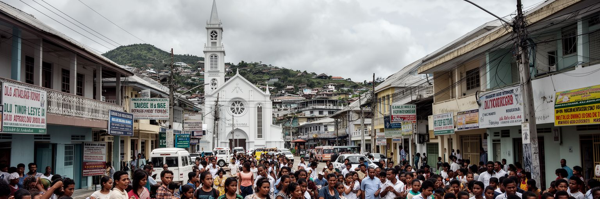
ディリの文化を読むうえで、カトリック信仰と言語の重なりは欠かせません。東ティモールではカトリックが社会生活の大きな軸となり、ミサ、洗礼、結婚、葬儀、学校、慈善活動、独立記念の式典まで、教会が公私の時間を結びます。ディリの聖堂や教区施設は、宗教施設であると同時に、占領期の支援、教育、避難、記憶の場でもありました。言語も複層的です。テトゥン語は首都の日常を広くつなぎ、ポルトガル語は国家の公用語と歴史的つながりを示し、インドネシア語は占領期を経験した世代や近隣との実務で使われ、英語は援助機関や若者の仕事で存在感を持ちます。各地の民族語を持つ人々が首都へ移るため、家庭、学校、市場、官庁で使う言葉が変わります。多言語性は豊かさである一方、教育格差や行政アクセスの差にもなります。ディリでは、祈りと言葉が国家の統合を助けると同時に、誰が公的な会話へ参加できるかを決めます。教会の鐘、学校の制服、家族の祝い、路上の会話を重ねて見ると、首都の文化は抽象的な伝統ではなく、日々の礼儀と学びで保たれていることが分かります。信仰は、国家の記憶を家族の生活へ近づける力でもあります。言葉を選ぶことは、相手の世代、教育、地域、経験を尊重する行為でもあります。多言語の街では、翻訳と聞く姿勢が公共性を支えます。祈りの場も学びの場です。
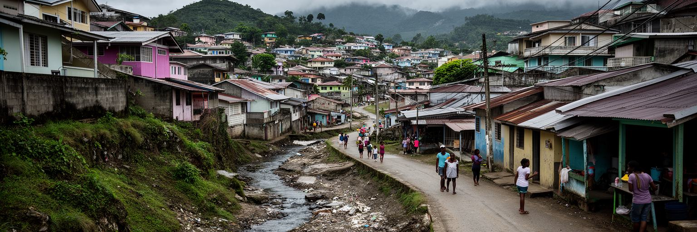
ディリの暮らしでは、住宅、水、衛生、排水、道路、電力、廃棄物が切実な課題です。人口が首都へ集中し、地方から学業や仕事を求めて移る人も多いため、低地の住宅地、斜面地、郊外の集落が拡大してきました。正式な区画と非公式な住まいが近くに並び、土地権利、家賃、建材費、親族との同居、雨季の安全が家計を左右します。水道が安定しない地域では、貯水タンク、井戸、購入水、近所の助け合いが生活を支えます。雨季には排水路があふれ、道路の泥、冠水、ごみ、蚊、感染症の不安が増えます。乾季には水不足と暑さが強まり、木陰や海風の価値が高くなります。都市の成長を建物の増加だけで測ると、毎日の不便は見えません。学校や病院へ安全に行ける道、夜に明かりがある通り、子どもが遊べる空地、女性が水を得るために長く歩かずに済む仕組みが、生活の質を決めます。ディリでは、国家建設の大きな言葉が、蛇口、排水溝、屋根、道路舗装として試されます。限られた平地を公平に使い、斜面や海岸の危険を避けながら住宅を整えることは、首都の安定そのものです。生活基盤が強くなるほど、住民は独立国家の成果を身近に感じられます。住宅改善は、立派な建物を増やすことだけではなく、雨の日に眠れる屋根、近い水場、清潔な排水、安全な通学路をそろえることです。小さな設備の差が、健康と時間を守ります。
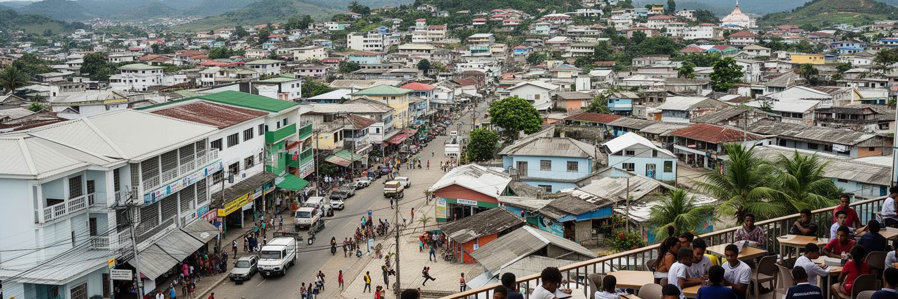
東ティモールは若い人口構成を持つ国で、ディリはその期待と不安が最も見えやすい場所です。大学、職業訓練校、語学学校、教会系学校、公共機関、NGO、商店、カフェ、建設現場が、若者の進路を受け止めます。地方から来る学生にとって、首都は学びと仕事への入口ですが、家賃、交通費、教材、通信費、家族への仕送りが負担になります。公務員や国際機関の仕事は魅力的に見えますが、募集は限られ、民間部門の雇用はまだ十分ではありません。英語、ポルトガル語、テトゥン語、インドネシア語をどう身につけるかは、仕事の機会を大きく左右します。若者は独立を直接知らない世代として、抵抗の記憶を受け継ぎながら、スマートフォン、音楽、サッカー、留学、起業、海外労働を通じて別の未来を描きます。失業や不安定就労が続けば、政治への不満、移住、都市の緊張が強まります。一方で、若者が地域活動、環境保護、メディア、観光、農業技術、デジタルサービスに参加すれば、首都は小さな市場を超えた実験の場になります。ディリの教育課題は、学校数だけでなく、学びが生活できる仕事へつながるかです。若い人が国内で将来を組み立てられるかどうかが、独立国家の持続力を決めます。学校から職場への橋を作るには、実習、職業資格、語学、起業支援、地方との連携が必要です。若者の時間を待機で終わらせないことが、都市の活力になります。
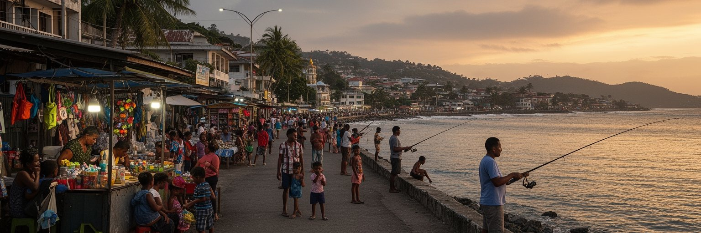
ディリの海辺は、都市の日常を柔らかく受け止める場所です。夕方になると、海岸道路沿いに散歩する家族、屋台で食事をする若者、釣りをする人、バイクを停めて話す人、海を眺める旅行者が集まります。オンバイ海峡の向こうにアタウロ島が見え、背後には山が迫るため、首都の景色は常に海と山の間で開きます。海辺は公共空間ですが、道路交通、駐車、ゴミ、照明、歩道の途切れ、津波避難、海岸侵食といった課題も抱えます。快適な水辺を作るには、観光客向けの整備だけではなく、住民が無料で過ごせる日陰、トイレ、ベンチ、安全な横断、子どもの遊び場が必要です。屋台や小商いは低所得世帯の収入源であり、規制だけで排除すれば生活の場を失わせます。海を眺める風景はディリの魅力ですが、海岸を誰が使えるかは都市の公平性を示します。高級施設や車が水辺を占めるのではなく、歩行者、家族、若者、高齢者、漁業者が共存できる設計が望まれます。ディリの海辺を読むと、首都の政治や歴史とは別の、日々の休息と社交の時間が見えてきます。独立国家の大きな物語も、夕暮れの海辺で少し生活の温度へ戻ります。海岸にごみを残さないこと、照明を整えること、歩いて渡れる場所を増やすことは、観光以前の生活改善です。海辺の質は、首都の思いやりを映します。夕方の涼しさが人を外へ誘います。
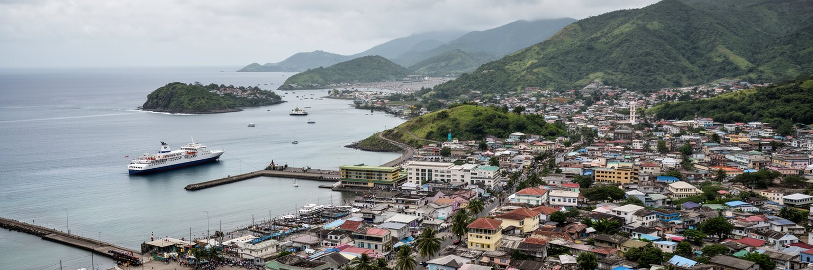
ディリは、東ティモール国内外の移動をまとめる結節点です。港は物資の入口であり、フェリーはアタウロ島や沿岸部へのつながりを作り、空港はインドネシア、オーストラリア、地域の都市と首都を結びます。市内から少し離れると山道が始まり、地方の町や村へ向かう移動は、道路状態、雨季の土砂、燃料価格、車両の確保に左右されます。地方の住民にとってディリへ行くことは、行政手続き、病院、大学、市場、親族訪問、就職活動を意味します。反対に、首都の住民にとって地方や島へ向かうことは、家族の土地、儀礼、農村の支援、観光、休息へ戻る道です。交通が不安定だと、地方と首都の格差は広がります。港や空港の整備だけでなく、市内バス、歩道、タクシー、バイク、学校への通学路も重要です。アタウロ島はディリから近い観光地として知られますが、島の生活、海洋保全、漁業、廃棄物、宿泊施設の規模を尊重しなければ、近さが負担に変わります。ディリの交通を読むことは、海、山、島、地方、国外をどう結び、移動の費用と危険を誰が負うのかを見ることです。首都の便利さは、地方の暮らしと切り離せません。道と船の質が、国の一体感を支えます。時刻表、運賃、乗り場の分かりやすさも、移動の公平さを左右します。交通情報が届くほど、地方から来る人の不安は減ります。案内の分かりやすさも大切です。
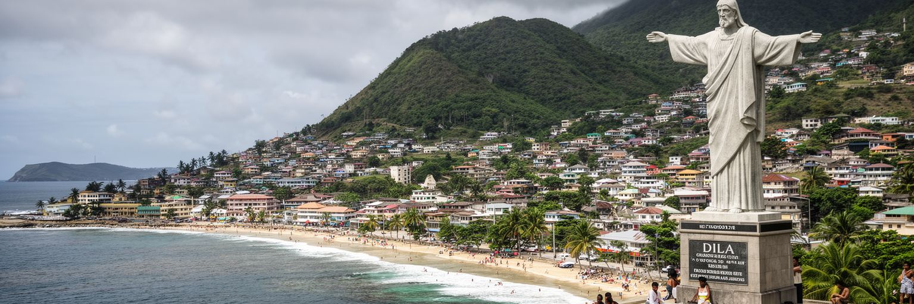
ディリの観光は、派手な都市景観ではなく、歴史と自然を組み合わせることで深まります。クリスト・レイ像へ上る道、海岸の夕景、聖堂、市場、抵抗博物館、サンタクルス墓地、ポルトガル時代の建築、近郊の山村、アタウロ島の海は、短い距離の中で異なる物語を見せます。ダイビングやシュノーケリングでは豊かなサンゴ礁が魅力になりますが、海洋環境はゴミ、乱獲、気候変動、観光圧力に弱いです。観光客が増えることは、ガイド、宿泊、飲食、交通、手工芸に収入をもたらしますが、利益が地元に残る仕組みがなければ、都市の生活改善にはつながりません。抵抗の記憶を訪れる旅では、悲劇を見世物にせず、説明を読み、沈黙の時間を持つ姿勢が必要です。海辺のリゾート感だけを強調すると、独立国家としての歩みや住民の暮らしが薄くなります。ディリを拠点にした旅の価値は、海で休み、山を見て、教会と博物館を訪ね、市場で食事をし、若い国がどのように未来を作ろうとしているかを感じられる点にあります。観光は消費で終わるのではなく、歴史と環境への敬意を伴う学びになり得ます。小さな首都だからこそ、旅の行動が地域へ与える影響も見えやすいです。地元ガイドを使い、島や村のルールを守り、市場で支払う小さなお金を軽く見ないことが、旅の責任になります。静かな滞在ほど、都市の理解は深まります。
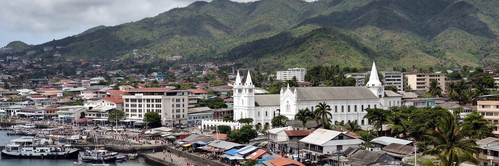
ディリは、世界の巨大都市のような人口や金融力で語る都市ではありません。それでも重要なのは、独立後の国家建設、占領と抵抗の記憶、石油基金に支えられた財政、援助と自立の緊張、若い人口、カトリック信仰、多言語社会、港湾物流、海辺の公共空間、山と海に挟まれた防災課題が、一つの小さな首都に集まっているからです。市街地の規模は限られていますが、ここでの行政判断は地方の村、島、学校、診療所、道路、国際関係へ広がります。ディリを読む時は、海辺の明るさと歴史の痛み、若者の希望と雇用の少なさ、国家の象徴と生活インフラの不足を同時に見る必要があります。港に入るコンテナ、教会のミサ、抵抗博物館、大学の学生、斜面の住宅、夕暮れの屋台は、別々の風景ではなく同じ都市の断面です。ディリの世界性は、巨大企業の本社ではなく、国連、援助機関、移民、言語、海洋資源、近隣外交を通じて現れます。小さな首都ほど、国家の課題が日常の距離で見えます。ディリを歩くことは、独立が完成した状態ではなく、毎日の行政、教育、仕事、記憶、海辺の暮らしの中で作り続けられる過程であることを確かめることです。規模の小ささは、世界都市としての価値を下げるものではありません。むしろ国家の選択が街路と家計に現れる速さが、ディリを鋭い観察対象にしています。そこに学びがあります。